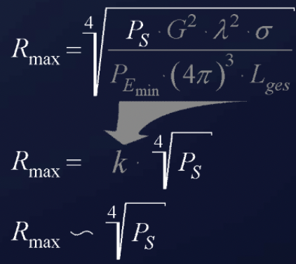
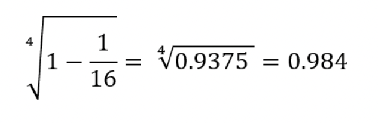
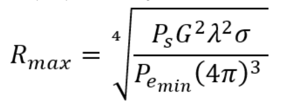
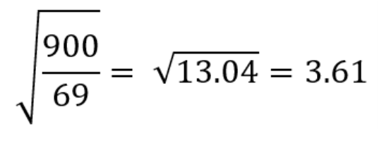

The idealized radar equation assumes perfect propagation. Real systems lose signal at every stage: in the atmosphere, in the beam shape, in the cross-section flutter, and in the plumbing between amplifier and antenna. This chapter catalogs those losses and then shows how the fourth-root range dependence shapes practical design choices.
Every radar system has miscellaneous losses. Some of these are preventable, or at least reducible by a well-designed radar. Some losses can even be minimized by maintenance. However, some losses are inevitable. The sum of losses is declared excessive after about 21 decibels. Well-designed radar have closer to 13 decibels of loss.
These are losses due to absorption by the atmosphere. They depend upon the radar operating frequency, the range of the target, and the elevation angle of the target relative to the radar. These losses are insignificant at low frequencies less than 3 GHz, particularly during clear weather conditions.
This loss term accounts for the fact that, as the beam scans across the target, the signal amplitudes of the integrated pulses vary. Because of the beam-shape loss, the full integration gain of the integrator cannot be realized. Typical beam-shape losses are as follows:
For a phased array radar, the beam does not move continuously (in most cases) but in discrete steps. This means that the phased array radar may not point the beam directly at the target. It follows that the antenna gain used in the radar range equation will not be at its maximum value. These phenomena are accommodated through the inclusion of a factor for beam-shape loss.
The azimuth beamwidth of a radar antenna has different values at different elevation angles. This is summarized in an additional loss factor.
This relatively high loss is a result of the fluttering in the values of radar cross section. The gaps are frequency dependent but represent less than optimized performance. In order to overcome some of the target size fluctuations, many radar use two or more different illumination frequencies. Frequency diversity typically uses two transmitters operating in tandem to illuminate the target with two separate frequencies.
If the radar uses an MTI with a staggered PRF waveform, and a good MTI and PRF stagger design, it will suffer up to 3 dB of signal processing loss.
These are typically associated with the waveguides and other components between the power amplifier and the antenna. They are typically 1 to 2 dB in a well-designed radar.
These are typically associated with the waveguides and other components between the antenna and the RF amplifier. They are also typically 1 to 2 dB for a well-designed radar. If the noise figure is referenced to the antenna terminals, receive losses are included in the noise figure.
Here are some examples to demonstrate the consequences of changing selected parameters of a radar set.
Not every transmitting vacuum tube is equally good. Minimal production tolerances can influence the obtainable transmit power and therefore also the theoretically attainable range.
The most important feature of this equation is the fourth-root dependence.
Other than the transmit power, we assume all other factors are constant. If we call all of them coefficient k, the maximum range equation is shown in line 2 below. Notice that to double the range, the transmitted power would have to be increased by 16-fold.

The inversion of this argument is also true. If the transmit power is reduced by 1/16 (such as a failure of one of 16 transmitter modules), the change in the maximum range of the radar station is negligible in practice (less than 2 percent).

While evaluating the minimal received power, we follow a different procedure. It is also under the fourth root, but in the denominator. The reduction of the minimal received power of the receiver gets an increase in the maximum range.
For every receiver, there is a certain receiving power at which the receiver can work at all. This smallest workable received power is frequently called MDS, the minimum discernible signal, in radar technology. Typical radar values of the MDS echo lie in the range of -104 dBm to -110 dBm.
The antenna gain is squared under the fourth root.
The same antenna is typically used during transmission and reception.
If one quadruples the antenna gain, it will double the maximum range.

Here is a concrete example from VHF radar technology. Sometimes the P-12 (a yagi antenna array with G = 69) was mounted at the antenna of the P-14 (same frequency, parabolic dish antenna with G = 900). This combination was often referred to jocularly as the P-13. In accordance with our radar equation, the maximum range should increase:

Note that the fourth root was simplified against the square in the numerator and denominator at once.
It would be wonderful if the maximum range could be tripled so simply. But bigger antennas use much longer supply cables. Losses on the incoming feed lines and losses due to misadjustment of the antenna give away half of what is invested. Nevertheless, 1.6 times the maximum range is not degraded either. There are, however, more disturbances now, such as too many ambiguous targets.
Five quick questions on radar loss, graded instantly with your score saved on this device.